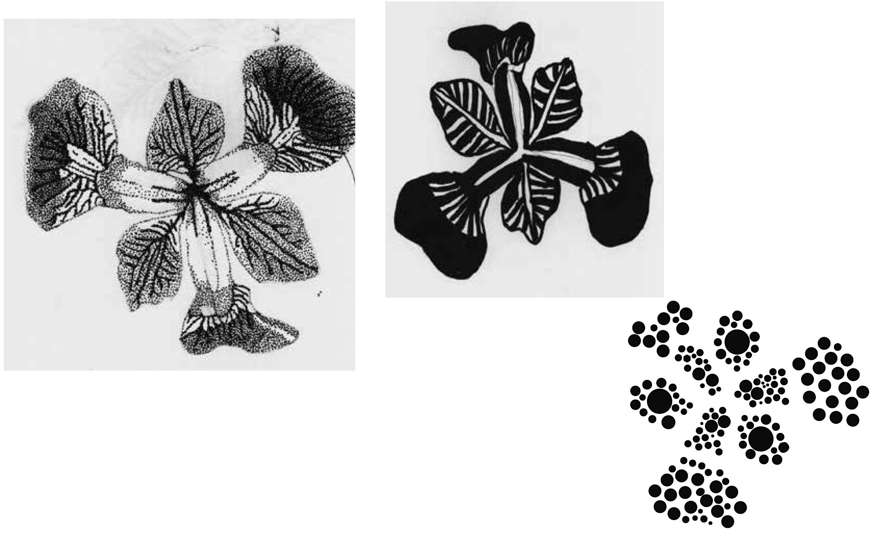
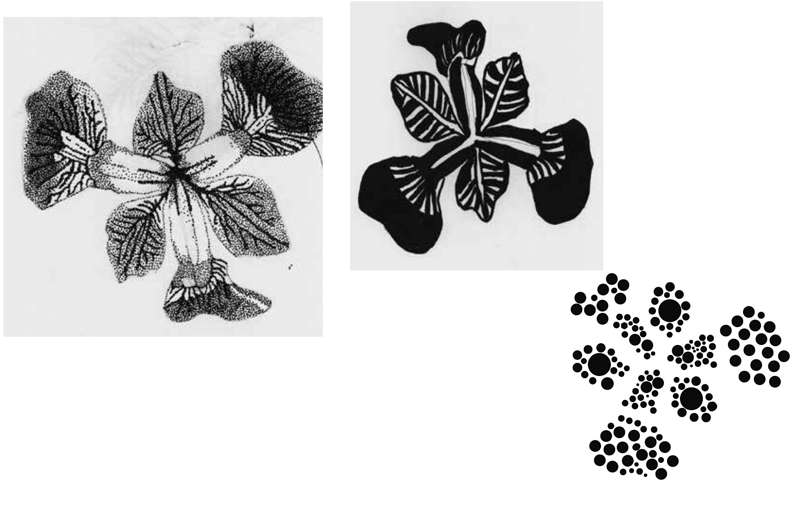
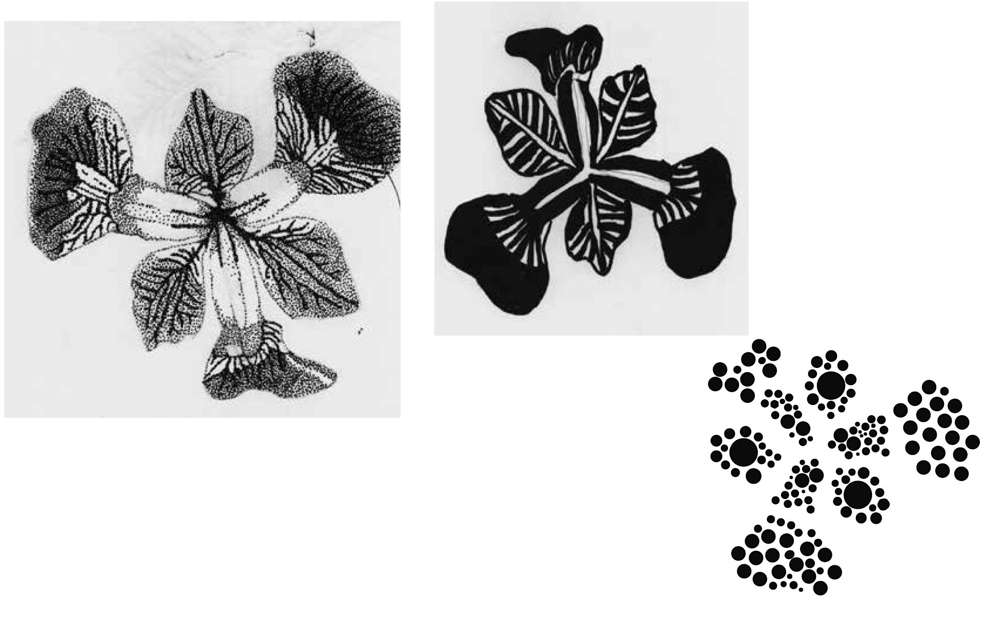

Bubbles is a geometric typeface created only with circles, sqaures, triangles, 45 degree angles and 90 degree angles. It started on the back of an A&W restaurant receipt and is now a fully fledged font.
This magazine editoral was for an elective course project. The goal of the project was to investigate across 3 generations the ideas and perception of body image. This magazine displayed images of the times an answers to the interviews .
Mushroom thoughts is a cottagecore slow living lifestyle magazine. I enjoyed creating this editoral. Starting from sketching the mushroom themed mastehead to outlining and laying out the articles and images in a pleasing manner.
These stamps were a tedious and time consuming project. I created the drawings of a violet iris in many different forms. Full colour, black and white, stippling, lines only, shapes only. And all to use in creating a colection of stamps and postcards.

This collection of works is for all and any album covers that I have created. So far it is only two but I plan to continue to grow the collection.

This collection is all works with a typographic focus.


.png)
This collection is all works with an Illustrative focus.

This collection is all works with a focus on brands, logos and branding.